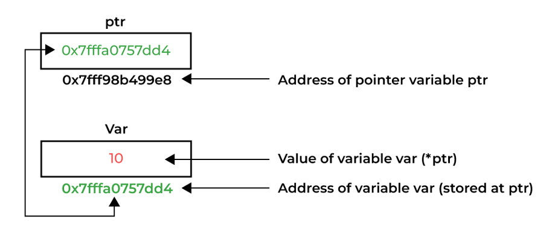

Memory Management
Liting Zhang
University of West Florida
Outline
Overview: what memory management means in C++
Memory regions: code, static, stack, heap
Stack: automatic allocation, function calls, stack overflow
Heap: dynamic allocation with
newanddeletePointer basics: address-of, dereference,
nullptrDynamic arrays: 1D and 2D patterns
References vs pointers
Classes owning dynamic memory: destructor, shallow copy, rule of 3
Rule of 5 and move semantics
Tools: valgrind (Linux)
Learning goals
After this lecture, you should be able to
Describe the major memory regions and what lives in each one
Explain stack vs heap allocation and common failure modes
Use pointers safely: initialization, dereference rules,
nullptrAllocate and free single objects and arrays correctly
Build dynamic arrays (1D) and 2D arrays on the heap
Explain memory bugs: leaks, double delete, use-after-free, out-of-bounds
Explain shallow copy and why it breaks resource-owning classes
Implement rule of 3 and describe rule of 5 at a high level
Overview
Definition: memory management in C++ is allocating and deallocating memory for objects and data structures during program execution.
Motivation:
Optimize memory usage
Avoid memory leaks
Avoid dangling pointers
Avoid stack overflow
Memory Regions
Four regions
Code: compiled program instructions
Static: global and static variables
Stack: local variables and function parameters
Heap: dynamically allocated memory
Each region has different lifetime and management rules.
Memory addresses
In RAM, memory is a big sequence of numbered slots.
Each slot has an address (like house numbers)
Lowest memory address is a small number
Highest memory address is a large number
A pointer stores an address
Typical layout intuition
Common mental model:
Stack and heap share a free region between them
Stack grows as functions call functions
Heap grows as you allocate dynamic memory
If they collide: crash (stack overflow or out of memory)
Memory regions at a glance
Code: instructions (read-only on many systems)
Static: globals/static (entire program)
Stack: locals/params (per call)
Heap: dynamic objects (until freed)
Key idea:
Stack: automatic, limited size
Heap: manual, flexible size (but easy to misuse)
Layout varies by OS/compiler, but these roles are consistent.
Typical address space picture
| Higher addresses | Stack region (often grows downward as calls happen) |
| Free space between stack and heap (shrinks as both grow) | |
| Heap region (often grows upward as allocations happen) | |
| Static region (globals and static variables) | |
| Lower addresses | Code region (program instructions) |
Use this picture to explain collisions: stack overflow, out-of-memory, or stack/heap meeting.
Stack memory management
Stack is LIFO: last in, first out
The runtime maintains a call stack
Stores local variables and function parameters
Automatically managed: allocation and deallocation happen for you
Stack overflow happens when the stack cannot grow further.
Stack overflow: common causes
Infinite recursion (no base case)
Huge local arrays on the stack
Deep recursion with large stack frames
Recursion details are discussed in the recursion lecture, but this is the key failure mode.
Practice 1: identify stack overflow risk
Predict what can go wrong.
int f(int n) {
int big[1000000];
if (n <= 0) return 0;
return big[0] + f(n - 1);
}
int main() {
return f(10);
}What is the risk?
What is one safer redesign?
Practice 1 Answer
Risk:
bigis allocated on the stack for every recursive call. This can overflow quickly.Safer redesign:
Move large memory to the heap once, reuse it
Or redesign to iterative
Or reduce stack frame size
Heap memory management
Heap is used for dynamic memory
Managed manually by the programmer
Allocate with
newDeallocate with
deleteDynamic objects are accessed through pointers
Dynamic data facts and rules
A pointer is not the object: it stores the address of the object
The dynamic object lives on the heap until you destroy it
deleteonnullptrdoes nothingMatch form to form:
newwithdeletenew[]withdelete[]
Each allocation must be freed exactly once
Typical bugs to avoid
Memory leak: forget to delete
Double delete: delete same block twice
Use after free: use pointer after deleting it
Out of bounds access: write past allocated size
Invalid pointer casts: reinterpret addresses incorrectly
Single object vs array allocation
// single object
MyClass* p = new MyClass();
delete p;
// array
int* a = new int[10];
delete[] a;Practice 2: leak or not
Identify the bug.
int* makeArray(int n) {
int* a = new int[n];
for (int i = 0; i < n; i++) a[i] = i;
return a;
}
int main() {
int* p = makeArray(100);
// use p
return 0;
}What is wrong?
Show one fix.
Practice 2 Answer
What is wrong:
ppoints to dynamic memory that is never freed.
One fix:
int main() {
int* p = makeArray(100);
// use p
delete[] p;
return 0;
}Pointer definition
A pointer is a variable that stores an address of an object of some type.
The pointee is the object that lives at that address
The pointer variable itself also has an address
-
Use cases:
dynamic-size data
share data without copying
build linked structures

Pointer basic syntax
int x = 22;
int* ptr = &x; // ptr stores address of x
*ptr = 30; // dereference: modify x through ptr*is called the dereference operator. It gives us access to the value stored at the memory address ptr is pointing toRule: never dereference a pointer until you know it is valid.
Null pointer
Initialize pointers to nullptr to mean no object.
Checking before dereference can prevent crashes
deleteanddelete[]onnullptrdoes nothing
Practice 3: nullptr crash
What happens, and how do you fix it?
int main() {
int* p = nullptr;
*p = 5;
}Practice 3 Answer
Dereferencing
nullptrcrashes (undefined behavior).Fix: point to a real object before dereference.
int main() {
int x = 0;
int* p = &x;
*p = 5;
}Dynamic 1D array idea
Static arrays have compile-time fixed size.
Example:
int arr[10];Sometimes size is only known at runtime
Dynamic arrays allocate memory on the heap
int n = 0;
cin >> n;
int* arr = new int[n];
for (int i = 0; i < n; i++) arr[i] = i * i;
delete[] arr;
arr = nullptr;Two approaches for dynamic arrays of objects
Contiguous block: one allocation for N objects
Pointer table: one allocation for N pointers, then N allocations for objects
Tradeoff
Contiguous is cache-friendly and easier to delete
Pointer table supports per-element lifetime flexibility, but is more complex
class State {
private:
string name;
public:
State() : name("") {}
State(const string& n) : name(n) {}
string getName() const { return name; }
};Dynamic 1D objects: contiguous block
size_t N = 3;
State* states1 = new State[N];
for (size_t i = 0; i < N; i++) {
states1[i] = State("Alabama");
}
cout << states1[0].getName() << "\n";
delete[] states1;
states1 = nullptr;Dynamic 1D objects: pointer table
size_t N = 3;
State** states2 = new State*[N]();
for (size_t i = 0; i < N; i++) {
states2[i] = new State("Alabama");
}
cout << states2[0]->getName() << "\n";
for (size_t i = 0; i < N; i++) {
delete states2[i];
}
delete[] states2;
states2 = nullptr;Dynamic 1D objects: pointer table
2D arrays on the stack
Fixed-size 2D array is contiguous in row-major order
Column count must be compile-time constant for typical function parameters
Works well when dimensions are known at compile time
2D array on stack example
const int ROWS = 2;
const int COLS = 5;
double mat[ROWS][COLS] = {
{1, 2, 3, 4, 5},
{6, 7, 8, 9, 10}
};
cout << mat[1][2] << "\n";2D arrays on heap: two common patterns
One contiguous block: allocate
rows * colsas one 1D arrayPointer-to-pointer: allocate an array of row pointers, then allocate each row
Key difference:
One block is contiguous overall
Pointer-to-pointer is not contiguous overall
Heap 2D as one contiguous block
Manual indexing: index = r * COLS + c
size_t ROWS = 2;
size_t COLS = 5;
double* block = new double[ROWS * COLS];
for (size_t r = 0; r < ROWS; r++) {
for (size_t c = 0; c < COLS; c++) {
block[r * COLS + c] = r * COLS + c + 1;
}
}
cout << block[1 * COLS + 2] << "\n";
delete[] block;
block = nullptr;Heap 2D via pointer-to-pointer
size_t ROWS = 2;
size_t COLS = 5;
double** dyn = new double*[ROWS];
for (size_t r = 0; r < ROWS; r++) {
dyn[r] = new double[COLS];
for (size_t c = 0; c < COLS; c++) {
dyn[r][c] = r * COLS + c + 1;
}
}
cout << dyn[1][2] << "\n";
for (size_t r = 0; r < ROWS; r++) {
delete[] dyn[r];
}
delete[] dyn;
dyn = nullptr;Heap 2D via pointer-to-pointer Memory Layout
Practice 4: missing cleanup
What is missing?
double** make2D(size_t rows, size_t cols) {
double** a = new double*[rows];
for (size_t r = 0; r < rows; r++) {
a[r] = new double[cols];
}
return a;
}
int main() {
double** m = make2D(3, 4);
// use m
delete[] m;
}What bug occurs?
How do you fix the cleanup?
Practice 4 Answer
Bug: each row allocation leaks because only the outer pointer array is freed.
Fix: delete each row first, then delete the pointer table.
int main() {
double** m = make2D(3, 4);
for (size_t r = 0; r < 3; r++) {
delete[] m[r];
}
delete[] m;
m = nullptr;
}Reference vs pointer
Reference
Alias for another variable
Must bind to something at creation
Cannot be
nullptrCannot be reseated later
Pointer
Stores an address
Can be
nullptrCan be reseated to point elsewhere
Requires dereference to access the pointed value
Example: swap with pointers vs references
Pointer version:
void swapPtr(int* p1, int* p2) {
int tmp = *p1;
*p1 = *p2;
*p2 = tmp;
}Reference version:
void swapRef(int& a, int& b) {
int tmp = a;
a = b;
b = tmp;
}Practice 5: choose pointer or reference
You are writing a function that may or may not modify an integer.
If the function must always receive a valid integer, what is a good choice?
If the function should allow no integer (no object), what is a good choice?
Practice 5 Answer
Always valid integer: reference is a good choice
Allow no integer: pointer is a good choice, because
nullptrcan represent no object
Typical fields for a dynamic array class
For a vector-like class using a dynamic array:
pointer field: address of dynamic array
size field: number of elements currently stored
capacity field: total elements that can fit before growing
Growth strategy
Expanding by +1 each time is expensive
Common approach: double capacity when full
This gives amortized constant-time
push_backbehavior
Destructor idea
A destructor runs automatically when an object is destroyed.
Resource-owning classes should release dynamic memory in the destructor
Arrays allocated with
new[]must be destroyed withdelete[]
Destructor example
class List {
int size;
int* arr;
public:
List() : size(0), arr(nullptr) {}
List(int count, int value = 0) {
size = count;
arr = new int[count];
for (int i = 0; i < count; i++) arr[i] = value;
}
~List() {
delete[] arr;
arr = nullptr;
}
};Shallow copy problem
Default copy behavior for a class with a pointer:
Copy constructor copies pointer value only
Copy assignment copies pointer value only
Two objects now share one heap block
Destructor runs twice on same block
Result: double delete crash and shared-state surprises.
Practice 6: predict the crash
What goes wrong?
class Bag {
int n;
int* data;
public:
Bag(int n_) : n(n_) { data = new int[n]; }
~Bag() { delete[] data; }
};
int main() {
Bag a(5);
Bag b = a;
}What is the bug?
What rule do we need?
Practice 6 Answer
Bug: default copy makes a shallow copy.
aandbshare the samedatapointer.When both destructors run,
delete[]happens twice.Fix: rule of 3 (deep copy) for resource-owning classes.
Rule of 3
If a class owns a resource (dynamic memory), you typically need:
Destructor
Copy constructor
Copy assignment operator
Goal: deep copy so each object owns its own heap block.
Deep copy: copy constructor
class List {
int size;
int* arr;
public:
List() : size(0), arr(nullptr) {}
List(int count, int value = 0) {
size = count;
arr = new int[count];
for (int i = 0; i < count; i++) arr[i] = value;
}
~List() { delete[] arr; }
List(const List& other) {
size = other.size;
arr = new int[size];
for (int i = 0; i < size; i++) arr[i] = other.arr[i];
}
};Deep copy: copy assignment operator
Must handle self-assignment and existing memory.
class List {
int size;
int* arr;
public:
List() : size(0), arr(nullptr) {}
List(int count, int value = 0) {
size = count;
arr = new int[count];
for (int i = 0; i < count; i++) arr[i] = value;
}
~List() { delete[] arr; }
List(const List& other) {
size = other.size;
arr = new int[size];
for (int i = 0; i < size; i++) arr[i] = other.arr[i];
}
List& operator=(const List& other) {
if (this == &other) return *this;
delete[] arr;
size = other.size;
arr = new int[size];
for (int i = 0; i < size; i++) arr[i] = other.arr[i];
return *this;
}
};Practice 7: spot the self-assignment bug
Find the bug.
List& operator=(const List& other) {
if (this == *other) return *this;
delete[] arr;
size = other.size;
arr = new int[size];
for (int i = 0; i < size; i++) arr[i] = other.arr[i];
return *this;
}Practice 7 Answer
The self-assignment check is wrong: it compares a pointer to an object value.
Correct check:
if (this == &other) return *this;Why add move operations
Rule of 3 is correct, but copies can be expensive.
Copy duplicates the entire dynamic array
Temporary objects and returns-by-value can cause copies
Move semantics allow stealing the resource pointer
Rule of 5
Rule of 5 adds:
Move constructor
Move assignment operator
Idea:
Steal pointer from a temporary
Set the source pointer to
nullptrso its destructor is safe
Move constructor example
List(List&& other) {
size = other.size;
arr = other.arr;
other.size = 0;
other.arr = nullptr;
}Move assignment example
List& operator=(List&& other) {
if (this == &other) return *this;
delete[] arr;
size = other.size;
arr = other.arr;
other.size = 0;
other.arr = nullptr;
return *this;
}Practice 8: what must be true after a move
After moving from an object, what properties should the moved-from object have?
It should be safe to destroy
It should not own the resource anymore
It should be in a valid state for assignment
Practice 8 Answer
A common safe moved-from state:
pointer is
nullptrsize becomes 0
destructor does nothing harmful
assignment can later give it a new resource
valgrind on Linux
valgrind can detect most memory management problems.
Memory leaks
Use-after-free
Invalid reads and writes
Note: not natively available on macOS in many setups.
valgrind commands
valgrind --tool=memcheck --leak-check=yes ./main
valgrind --tool=memcheck --leak-check=yes --show-leak-kinds=all ./main
valgrind --tool=memcheck --leak-check=yes --show-leak-kinds=all --track-origins=yes ./mainSummary
Stack memory is automatic and tied to function calls
Heap memory is manual:
newallocates anddeletefreesPointers store addresses; dereference only when valid
newmatchesdelete,new[]matchesdelete[]Dynamic arrays need correct cleanup patterns
Resource-owning classes must avoid shallow copy
Rule of 3 makes copies safe; rule of 5 makes temporaries fast
Tools like valgrind help locate memory errors
Review questions
What lives on the stack and what lives on the heap?
What does
nullptrrepresent, and why is it useful?Why must
new[]be paired withdelete[]?What is the shallow copy problem?
What are the three members in rule of 3?
What is the main idea of move semantics?
Review question answers
Stack: locals and parameters. Heap: dynamically allocated objects and arrays.
nullptrmeans no object; it helps represent optional pointers safely.new[]allocates an array;delete[]destroys the array correctly.Shallow copy copies pointer values, making multiple objects share one heap block.
Rule of 3: destructor, copy constructor, copy assignment operator.
Move semantics steals the resource pointer from a temporary and nulls out the source.